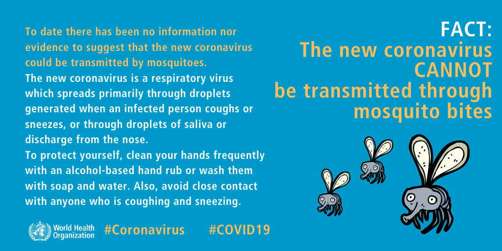
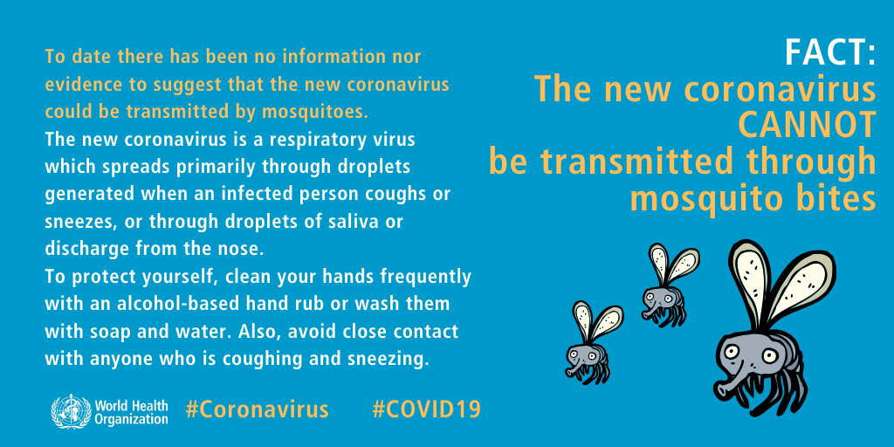
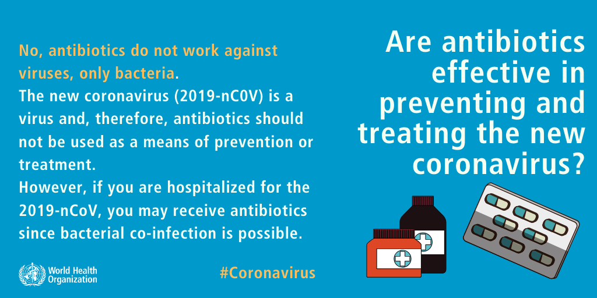
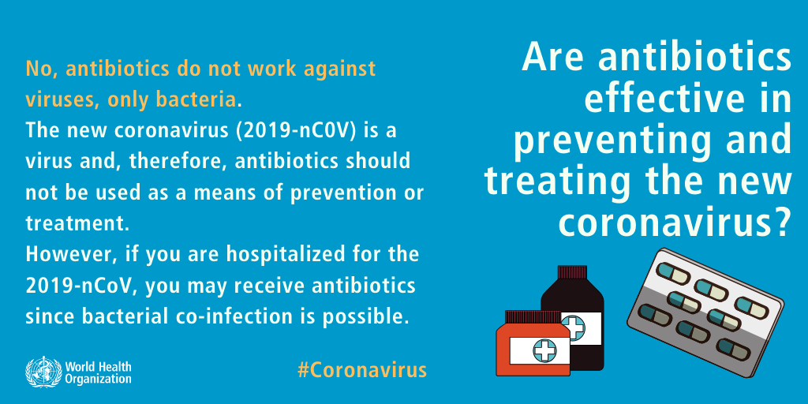

What is Covid-19?

COVID-19 is an infectious disease caused by severe acute respiratory syndrome coronavirus 2 (SARS-CoV-2).
The disease was first identified in 2019 in Wuhan, China, and has since spread globally, resulting in the 2019–20 coronavirus pandemic.
Symptoms
Coronavirus disease (COVID-19) is characterized by mild symptoms including a runny nose, sore throat, cough, and fever.
Illness can be more severe for some people and can lead to pneumonia or breathing difficulties.
The following symptoms may appear 2-14 days after exposure:
Fever,Cough,Shortness of breath
If you develop emergency warning signs for COVID-19 get medical attention immediately. Emergency warning signs include:
Difficulty breathing or shortness of breath
Persistent pain or pressure in the chest
New confusion or inability to arouse
Bluish lips or face
Protecting Yourself
1.Know How it Spreads
Currently,there is no vaccine to prevent COVID-19.
So,the best way to stay safeis to avoid being exposed to this virus.
The virus is thought to spread mainly from person-to-person:
i)Through respiratory droplets produced when an infected person coughs or sneezes.
ii)Through respiratory droplets produced when an infected person coughs or sneezes.
These droplets can land in the mouths or noses of people who are nearby or possibly be inhaled into the lungs.
The WHO reccomends to maintain at least 1 metre (3 feet) distance between yourself and anyone who is coughing or sneezing.
2.Take steps to protect yourself
Clean your hands often Wash your hands often with soap and water for at least 20 seconds especially after you have been in a public place, or after blowing your nose, coughing, or sneezing. If soap and water are not readily available, use a hand sanitizer that contains at least 60% alcohol. Cover all surfaces of your hands and rub them together until they feel dry. Avoid touching your eyes, nose, and mouth with unwashed hands. Avoid close contact with people who are sick Put distance between yourself and other people if COVID-19 is spreading in your community. This is especially important for people who are at higher risk of getting very sick.
3.Take steps to protect others
- Stay home if you’re sick:
- Cover coughs and sneezes:
- Wear a facemask if you are sick:
- Clean and disinfect:
Stay home if you are sick, except to get medical care.
Cover your mouth and nose with a tissue when you cough or sneeze or use the inside of your elbow.
Throw used tissues in the trash.
Immediately wash your hands with soap and water for at least 20 seconds. If soap and water are not readily available, clean your hands with a hand sanitizer that contains at least 60% alcohol.
If you are sick: You should wear a facemask when you are around other people (e.g., sharing a room or vehicle) and before you enter a healthcare provider’s office.
If you are not able to wear a facemask (for example, because it causes trouble breathing),
then you should do your best to cover your coughs and sneezes, and people who are caring for you should wear a facemask if they enter your room.
If you are not sick: You do not need to wear a facemask unless you are caring for someone who is sick (and they are not able to wear a facemask).
Facemasks may be in short supply and they should be saved for caregivers.
Clean and disinfect frequently touched surfaces daily. This includes tables, doorknobs, light switches, countertops, handles, desks, phones, keyboards, toilets, faucets, and sinks.
If surfaces are dirty, clean them: Use detergent or soap and water prior to disinfection.
WHO Public Service Announcement
Who is at a higher risk?
COVID-19 is a new disease, which means scientists and public health experts are still learning how it spreads, the severity of illness it causes and to what extent it may spread.
Early information shows that some people are at higher risk of getting very sick from this virus. This includes older adults and people who have serious chronic medical conditions like heart disease, diabetes and lung disease.
If you are at higher risk for serious illness from COVID-19 because of your age or a serious medical condition, it is extra important for you to take actions to avoid getting sick.
Take everyday precautions to keep space between yourself and others.
When you go out in public, keep away from others who are sick, limit close contact and wash your hands often.
Avoid crowds as much as possible.
Stock up on supplies.
Mythbusting and some facts

 

 
